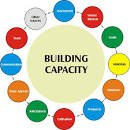
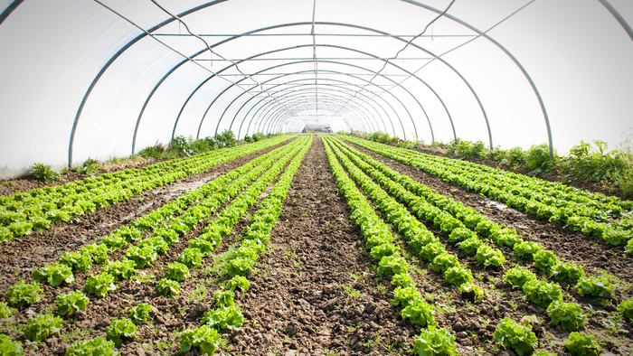
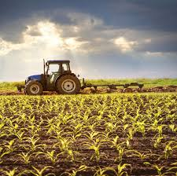

-

Capacity Building
Capacity building is not just about the capacity of a nonprofit today -- it's about the nonprofit’s ability to deliver its mission effectively now, and in the future. Capacity building is an investment in the effectiveness and future sustainability of a nonprofit.
Distinct capacity building projects, such as identifying a communications strategy, improving volunteer recruitment, ensuring thoughtful leadership succession, updating a nonprofit’s technology, and improving how it measures its outcomes, all build the capacity of a charitable nonprofit to effectively deliver its mission. When capacity building is successful, it strengthens a nonprofit’s ability to fulfill its mission over time, thereby enhancing the nonprofit’s ability to have a positive impact on lives and communities.
-
Market Linkages
The market linkage model of social enterprise facilitates trade relationships between the target population or “clients,” small producers, local firms and cooperatives, and the external market. The social enterprise functions as a broker connecting buyers to producers and vice versa, and charging fees for this service. Selling market information and research services is a second type of business common in the market linkage model. Unlike the market intermediary model, this type of social enterprise does not sell or market clients' products; rather it connects clients to markets.
The market linkage model can be either embedded or integrated.
If the enterprise is stand-alone; its mission revolving around linking markets, and its social programs support this objective, the model is embedded. In this case, the social program is the business, income generated from enterprise activities is used as a self-financing mechanism for its social programs.
-

NATIONAL POLICY FOR THE PROMOTION OF FARMER PRODUCER ORGANISATIONS
Collectivization of producers, especially small and
marginal farmers, into producer organisations has
emerged as one of the most effective pathways
to address the many challenges of agriculture but
most importantly, improved access to investments,
technology and inputs and markets. Department of
Agriculture and Cooperation, Ministry of Agriculture,
Govt. of India has identified farmer producer
organisation registered under the special provisions
of the Companies Act, 1956 as the most appropriate
institutional form around which to mobilize farmers
and build their capacity to collectively leverage their
production and marketing strength.
This policy document is meant to serve as a reference
and guide to Central and State Government agencies
which seek to promote and support Farmer Producer
Organisations, especially producer companies and
link them to benefits under various programmes and
schemes of the Central and State Governments.
-

PROCESS GUIDELINES FOR THE PROMOTION OF FARMER PRODUCER ORGANISATIONS
The primary objective of mobilising farmers into
member-owned producer organisations, or FPOs, is
to enhance production, productivity and profitability of
agriculturists, especially small farmers in the country.
The participant farmers will be given the necessary
support to identify appropriate crops relevant to their
context, provided access to modern technology through
community-based processes including Farmer Field
Schools; their capacities will be strengthened and they
will be facilitated to access forward linkages with regard
to technology for enhanced productivity, value addition
of feasible products and market tie-ups. Farmers will be
organised into small neighbourhood informal groups
which would be supported under the programme to
form associations/organisations relevant to their context
including confederating them into FPOs for improved
input and output market access as well as negotiating
power